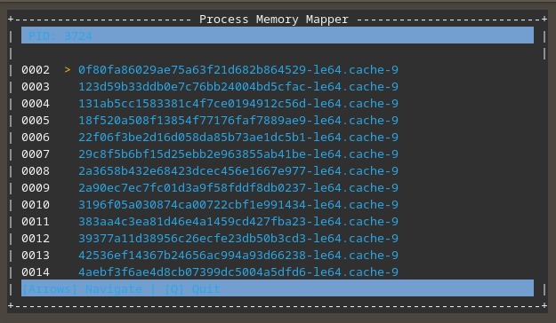
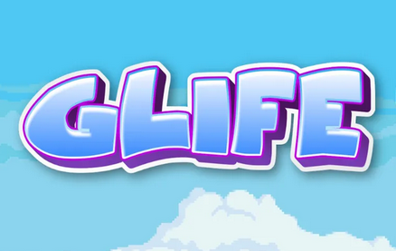

About me
I am an Italian student passionate about computer science. I’ve explored various areas of computer science to get a broad view and figure out my specialization. I started with Java, then moved to C++ with debugging tools like GDB and Ghidra to understand code internally. I wrote small x64 Assembly programs to deepen my low-level knowledge. I also studied networking basics to understand packet operations. Now, when coding, I usually have an idea of where bugs might originate from.
Skills
$ Linux
I've been using Linux as my main OS for years and know it well. I’m comfortable using it on servers, as I do that often. I even developed a tool to map a program's memory.
$ Java/Kotlin
I used these languages for game-related projects, where I created an entire game mode using Spigot APIs. I handled world restoration, stats, cosmetics, and arena management.
$ C++/debugging
I’ve had multiple low-level programming experiences, starting with C++ and debugging with tools like GDB, Ghidra, and x64Debugger. I can analyze x64 Assembly code and write programs that handle memory management.
$ Linux Memory Dumper

This program, available on my GitHub, works similarly to lsof. It collects information from the native /proc/ folder and displays it in a CLI environment. It also has various flags, like showing full paths or searching for specific files.
For this project, I used the following technologies:
| Ncurses
| C++
| Regex
| Linux '/proc' directory
$ GourLife

This is a Minecraft plugin. It is available on my GitHub. It is a hardcore plugin that gives every player a certain number of lives. When a player kills someone, they gain a life, and when someone dies, they lose a life. All the settings are in the config.
For this project, I used the following technologies:
| Paper API
| Kotlin
$ Text Editor
This is a text editor where I am experimenting with the Rust Iced library. The ultimate goal is to develop a strong understanding of Rust and how to interact with files.
For this project, I have used the following technologies:
| Rust
| Iced GUI